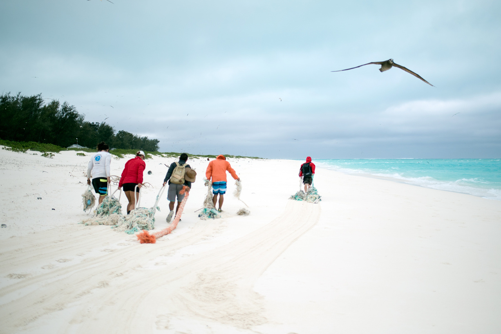

Plastics Vs. Planet
Most recently this year government fisheries and other organizations are joining together under the 2024 Earth day initiative "Planet Vs. Plastics". The focus is on working to eliminate plastic usage "for the sake of human and planetary health" and to decrease plastic production by 60 percent by 2040.
Learn more about this movement at EarthDay.org
Marine Debris
The ocean is full of debris that are not meant to be there. This is harmful to both humans and animals, therefore cleaning our shorelines and oceans is becoming more imperative. Specifically, the Northwestern Hawaiian Islands are being negatively impacted by marine debris. This is largely due to ocean currents carrying these debris to this part of the island and in turn the debris getting caught in the reef systems.
NOAA Fisheries is taking action with it's teams in the Northwesten Hawaiian Islands by cleaning up nets and debris that are entangled on the reef and that harm wildlife. "The team regularly surveys and removes debris from the following islands, atolls, and reefs in the Northwestern Hawaiian Islands: Kure Atoll, Midway Atoll, Pearl and Hermes Atoll, Lisianski Island, Laysan Island, Maro Reef, and French Frigate Shoals"(NOAA.gov).
Image courtesy of NOAA.gov
What Happens to The Debris?
NOAA charter vessels bring all the collected debris to Honolulu where "A key partner in the recycling process, Schnitzer Steel (a metal recycling company) chops the fishing nets into small pieces. The net pieces are then transported to the City and County of Honolulu’s H-Power Plant (a Convanta Energy Corporation facility), where they are safely incinerated to produce electricity for the island of Oahu"(NOAA.gov).
Get involved or just learn more about how to reduce ocean debris by clicking here.